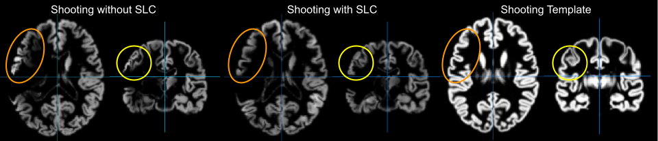

Voxel-based Preprocessing Methods:
This toolbox is an extension of the default segmentation in SPM12, but uses a completely different segmentation with a lot of support functions (listed in processing order with details below):
- Internal Interpolation
- Denoising
- Affine Preprocessing (APP)
- Local Adaptive Segmentation (LAS)
- AMAP Segmentation
- Partial Volume Segmentation
- Skull-Stripping and Cleanup
- Spatial Normalization
- White Matter Hyperintensity Correction (WMHC)
- Stroke Lesion Correction (SLC)
Detailed aspects:
-
Denoising
We also use two noise reduction methods to make data processing, and the tissue segmentation in particular, more robust against noise. The first method is a spatial-adaptive Non-Local Means (SANLM) denoising filter and and removes noise while maintaining edges (Manjón et al. 2010) and is implemented as pre-processing step. The second method is a classical Markov Random Field (MRF) approach, which includes spatial information from adjacent voxels in the segmentation estimation (Rajapakse et al. 1997) and is part of the AMAP segmentation.
-
Interpolation
CAT12 uses an internal interpolation to provide more reliable results even with low resolution images and anisotropic spatial resolutions. Although interpolation cannot add more details to the images, some of the functions used benefit from the higher number of voxels and the usual strip artefacts in modulated images are greatly reduced.
-
Affine Preprocessing (APP)
To improve the initial SPM segmentation, an initial affine registration is applied to a bias-corrected image and the intensity range is limited to avoid problems in special protocols. If the preprocessing fails a more aggressive version is available that applies a rough bias correction and removes non-brain parts the brain before the initial affine registration. See APP for more information.
-
Local Adaptive Segmentation (LAS)
GM intensity can vary for different regions such as the motor cortex, the basal ganglia, or the occipital lobe. These changes have an anatomical background (e.g. iron content, myelinization), but are dependent on the MR-protocol and often lead to GM-underestimations at higher intensities and CSF-overestimations at lower intensities. Therefore, a local intensity transformation of all tissue classes is used to reduce these effects in the image before the final AMAP segmentation. The strength of the changes is controlled by the "Strength of Local Adaptive Segmentation" parameter in th expert GUI (cat.extopts.LASstr in cat_defaults file).
-
AMAP Segmentation
The segmentation approach is based on an Adaptive Maximum A Posterior (AMAP) technique without the need for a priori information on the tissue probabilities. This means that the Tissue Probability Maps (TPM) are not constantly used in the sense of the classical Unified Segmentation approach (Ashburner et al. 2005), but only for spatial normalization, initial skull-stripping, and as initial segmentation estimate. The subsequent AMAP estimation is adaptive in the sense that local variations of the parameters (i.e., means and variance) are modeled as slowly varying spatial functions (Rajapakse et al. 1997). This accounts not only for intensity inhomogeneities, but also for other local intensity variations.
-
Partial Volume Segmentation
In addition, the segmentation approach uses a Partial Volume Estimation (PVE) with a simplified mixed model of a maximum of two tissue types (Tohka et al. 2004). We begin with an initial segmentation into three pure classes: gray matter (GM), white matter (WM), and cerebrospinal fluid (CSF) based on the AMAP estimation described above. The initial segmentation is followed by a PVE consisting of two additional mixed classes: GM-WM and GM-CSF. This results in an estimate of the amount (or fraction) of each pure tissue type that is present in each voxel (since single voxels - given their size - probably contain more than one tissue type) and thus allows for more precise segmentation.
-
Skull-Stripping and Cleanup
CAT12 contains a (revised) SPM approach and a graph-cut based skull-stripping (GCUT). Moreover, a new cleanup routine, which uses morphological, distance and smoothing operations, improves removing of remaining meninges after the final segmentation. The strength of the cleanup is controlled by the "Strength of Final Clean Up" parameter in the expert GUI (cleanupstr in cat_defaults).
-
Spatial Normalization
Another important extension to the SPM12 segmentation is the integration of the Dartel (Ashburner 2007) and Geodesic Shooting (Ashburner 2011) normalization into the toolbox by already existing Dartel and Geodesic Shooting templates in MNI space. These templates were derived from 555 healthy control subjects of the IXI-database (http://www.brain-development.org) and are available in the MNI space for six different iteration steps of the Dartel and Geodesic Shooting normalization. Therefore, the creation of sample-specific Dartel and Geodesic Shooting templates is no longer necessary for most studies. For studies investigating children data, I still recommend creating a customized Dartel or Geodesic Shooting template. However, it should be noted that this option requires a representative sample with a sufficient number of subjects.
-
White Matter Hyperintensity Correction (WMHC)
The greater dependency of AMAP PVE segmentation on image intensities requires detection and handling of White Matter Hyperintensities (WMHs, Dahnke et al. 2019). An atlas-region-growing strategy is used to detect WMHs and assign them to GM (like in VBM8, default), WM, or as a separate class. For details see WMHC.
-
Stroke Lesion Correction (SLC)
To avoid improper volumetric deformations in stroke lesions, CAT allows to suppress strong (high-frequent) deformation in the Dartel/Shooting registration schemes (Figure 1). The lesions have to be set to zero (e.g., by using the Manual image (lesion) masking batch) and the SLC flag has to be activate in the expert mode of CAT. The functions are still in development and a customized surface registration has not yet been implemented.

Figure 1: Shown is the gray matter segmentation of subject SLC_msk_c0009s0010t01 from the ATLAS database without (left) and with Stroke Lesion Correction (SLC; right).